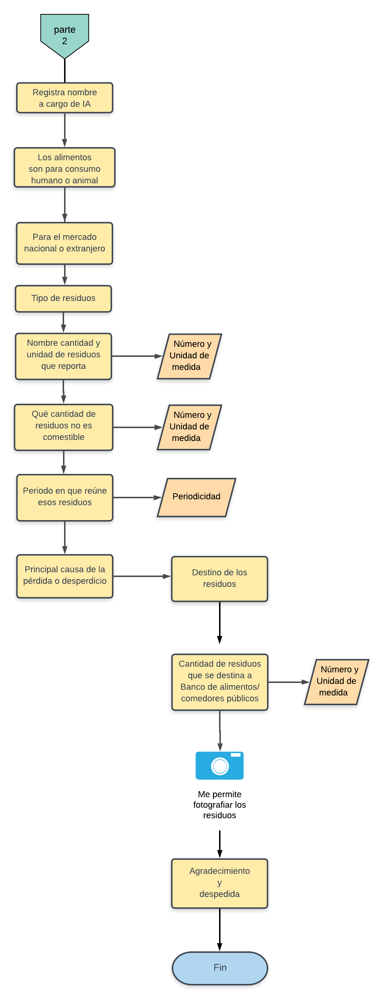

Documento metodológico
Introducción
El Instituto Nacional de Estadística y Geografía presenta la Encuesta sobre Residuos Alimenticios y Materia Orgánica (ERAMO) cuyo propósito es contribuir a la caracterización y medición de la pérdida y desperdicio de Alimentos (PDA) mismo que se ha convertido en un problema mundial y nacional debido a la cantidad de alimentos que se pierden en la cadena de abasto alimentaria, por el impacto social, económico y ambiental que representa. De acuerdo con estudios de la Organización de las Naciones Unidas para la Agricultura y la Alimentación (FAO) así como del Instituto de Recursos Mundiales (WRI), se estima que, a nivel mundial, un tercio estimado de toda la comida se pierde o se desperdicia al pasar de donde se produce a donde se consume; teniendo importantes impactos económicos, sociales y ambientales.
En relación con los recursos naturales, alimentos perdidos y desperdiciados a nivel mundial consumen una cuarta parte de toda el agua utilizada anualmente en la agricultura, se requiere un área de cultivo del tamaño de China y genera un estimado del 8% de las emisiones globales de gases de efecto invernadero (WRI, 2016). De hecho, si los alimentos perdidos y desperdiciados fueran un país, sería el tercer emisor de gases de efecto invernadero más grande del planeta, solo detrás de China y Estados Unidos.
La organización de las Naciones Unidas (ONU) ha volteado su mirada hacia este problema y ha propuesto incluir entre los Objetivos de Desarrollo Sostenible (ODS) especialmente en la meta 12.3 la invitación a reducir a la mitad el consumo mundial de alimentos per cápita a nivel minorista y de consumo y reducir las pérdidas de alimentos a lo largo de las cadenas productivas y de suministro (incluidas las perdidas postcosecha) para el 2030.La ERAMO iría más allá, al incluir la perdida y desperdicio durante la producción de alimentos precosecha (agricultura y cría de animales); etapa que produce cantidades significativas de dichas pérdidas y desperdicios. Además, la ERAMO también recabaría información de otros desechos orgánicos recolectados por los servicios gubernamentales correspondientes.
El INEGI está trabajando el tema desde la perspectiva de los impactos ambientales y de los recursos naturales. Nuestro interés es contribuir al cálculo del impacto ambiental y socioeconómico que resulta de la pérdida y desperdicio de alimentos y materiales orgánicos, mediante la generación de información estadística y geográfica veraz y oportuna con la finalidad de apoyar a los tomadores de decisiones en la elaboración de políticas públicas sobre recursos naturales, energía, medio ambiente en general y aspectos económicos y sociales; así como contribuir a la seguridad alimentaria de México. La Encuesta sobre Residuos Alimenticios y Materia Orgánica (ERAMO) inaugura un nuevo tema de estudio para el instituto, al ir a todas las etapas de la cadena de abasto alimentaria y recabar información que contribuya a la medición del fenómeno para contribuir a una política nacional encaminada al fomento de su reducción, así como la recuperación de alimentos y el reciclaje de desechos alimentarios.
La ERAMO es un proyecto que impulsa la Dirección de Estadísticas del Medio Ambiente, perteneciente a la Dirección General de Geografía y Medio Ambiente, con la colaboración de la Dirección General de Estadísticas Sociodemográficas y la Dirección General de Estadísticas Económicas, ambas del INEGI; mediante el cual se pretende captar información sobre las cantidades de residuos de alimentos que se pierden y desperdician desde de la precosecha hasta la etapa del consumo en los hogares. Además, incluirá otros tipos de materia orgánica, consistente en residuos orgánicos como, por ejemplo, la recolección de aquella materia vegetal que resulta de la poda y limpia de parques y jardines a cargo del servicio de limpia público.
La encuesta está dirigida a identificar la pérdida de alimentos, entendida como aquellos alimentos destinados al consumo humano que, debido al mal funcionamiento de los sistemas de producción y distribución de estos, disminuyen en cantidad o calidad. La causa primordial de la pérdida de alimentos se puede identificar con la cadena de abasto alimentaria; por ejemplo, alimentos que se pudren en el campo o en bodegas debido a manejos, tecnologías o refrigeración inadecuados, o alimentos que no llegan al mercado a causa de una infraestructura deficiente y que por lo tanto no se consumen.
Se pretende caracterizar también el desperdicio de alimentos, entendido como aquellos alimentos para consumo humano que se desechan (partes tanto comestibles como no comestibles) de manera intencional. A menudo, el desperdicio de alimentos se refiere a lo que sucede a lo largo de la cadena alimentaria desde la tienda de venta al menudeo hasta el punto de consumo propuesto. El desperdicio de alimentos muchas veces se debe a decisiones como el mal manejo de las existencias o descuidos, e incluye alimentos descompuestos, caducos o que no se consumieron una vez preparados.
En algún momento las variaciones entre las definiciones de pérdida y desperdicio de alimentos se confunden. La diferencia principal estriba en que la pérdida tiende a centrarse en las etapas iniciales de la cadena de abasto alimentaria (es decir, producción y procesamiento de alimentos), mientras que el desperdicio de alimentos se concentra sobre todo en las etapas finales de la cadena (es decir, distribución, venta al menudeo, servicios de preparación de alimentos y consumo). El INEGI pretende junto con instituciones, organizaciones y la academia, definir los mecanismos para captar la información necesaria que de soporte a las iniciativas en curso y las que vienen para abordar y ofrecer soluciones a este problema nacional y mundial.
Agua
Entre los efectos ambientales que resultan de la pérdida y desperdicio de alimentos, se encuentra el tema del agua, que se debe analizar al menos en dos niveles: el consumo de este recurso para la producción de alimentos y como residuos que terminan en los ríos y cuerpos de agua, además de los propios mantos freáticos. Aprovechar de manera eficiente los alimentos y sus residuos evita que se contaminen las aguas superficiales y subterráneas, lo que a su vez resulta en beneficio de la conservación del agua potable.
En algunos países se ha comprendido la importancia de un manejo apropiado de los residuos orgánicos y alimentarios, así por ejemplo algunos estados de la Unión Americana han prohibido la disposición final de éstos y les obliga a definir metas de aprovechamiento para evitar que lleguen a los sitios de disposición final. Entre los aprovechamientos se pueden mencionar, a la Universidad Purdue (Estado de Indiana) donde los desechos alimentarios del campus se recolectan y se envían a plantas de tratamiento de aguas residuales para codigestión, lo que contribuye a la generación de electricidad para la planta de tratamiento.
Consumo de agua en los países de América del Norte
| PAÍS / REGIÓN | CONSUMO DE AGUA (MILES DE MILLONES DE METROS CÚBICOS) |
|---|---|
| Canadá | 1.5 |
| Estados Unidos | 13.4 |
| México | 2.7 |
| América del Norte | 17.6 |
Existe una creciente necesidad de contar con información oficial que dé respaldo a la toma de decisiones de políticas públicas sobre la cantidad de alimentos y residuos orgánicos generados, así como el aprovechamiento de éstos en toda la cadena alimentaria, en México, Estados Unidos y Canadá. Uno de ellos es la presencia de residuos orgánicos en las aguas residuales, así como las que resultan de las plantas de tratamiento de esas aguas.
Suelos
Los impactos que genera la cantidad de residuos orgánicos que llegan a los sitios de disposición final municipales y privados en México, tiene que ver no solo con las emisiones de metano, pues la composición de los residuos puede llegar a ser de hasta 50% de orgánicos en este tipo de sitios, lo que significa que la superficie y espacio de los suelos destinada para recibir los residuos municipales se debe al menos por lo que toca a la mitad del problema a los residuos de tipo orgánico. De acuerdo con el informe Huella del despilfarro de alimentos, de la FAO (2013), entre los impactos al ambiente que resultan de la cadena alimentaria, desde su producción hasta la pérdida y desperdicio de alimentos, podemos encontrar: millones de hectáreas de tierras de cultivo desperdiciadas; millones de toneladas de fertilizantes aplicados; millones de m3 de espacio ocupado en rellenos sanitarios; millones de dólares estadounidenses (USD) pagados en tarifas por descarga o depósito de desechos; millones de USD en concepto de pérdida de biodiversidad, y billones de kilocalorías (kcal = 1,000 calorías) en posible pérdida de energía.
En la cadena alimentaria, el momento de la producción de alimentos se caracteriza por ser el de mayor exposición para la pérdida de alimentos, pues son muchos los factores que influyen para que suceda y van desde la semilla, los abonos, las plagas y enfermedades de los cultivos, la tecnología, forma de producción, monocultivo, tipo de intercalado, el clima, estándares de calidad y los precios de mercado, sólo por mencionar algunos. Las pérdidas pueden ser parciales o totales y generalmente se cuantifica por toneladas y pueden ser desde decenas hasta miles de ellas.
El suelo juega un papel importante en la cantidad y calidad de los alimentos producidos, pues la erosión y salinización, reducen la capacidad de los suelos para el intercambio de nutrientes en los cultivos. Estimaciones de la FAO del año 2015, indican que se pierden aproximadamente 7.6 millones de toneladas de producción de cereales por estas causas. El reto para el año 2050 no sólo es producir más alimentos para la creciente población mundial sino además, evitar que cerca de 1.5 millones de kilómetros cuadrados de tierras agrícolas se pierdan por causa de la erosión.
Gases de Efecto Invernadero
Un tema fuertemente vinculado a pérdida y el desperdicio de alimentos es la generación de metano que es uno de los gases de efecto invernadero (GEI), una de las fuentes importantes de este gas es la que resulta de la descomposición de los residuos orgánicos en los sitios de disposición final de los residuos sólidos urbanos municipales. La Comisión de Cooperación Ambiental para América del Norte (CCA) estima que los tres países que eran parte del Tratado de Libre Comercio de América del Norte (TLCAN) generan el equivalente a 200 millones de toneladas de CO2 aproximadamente, al año de GEI..
Los tres países de América del Norte han generado información sobre la cantidad de emisiones de gases de efecto invernadero que resultan de los rellenos sanitarios ubicados en sus territorios, con el objetivo de cumplir con el compromiso de la Convención Marco de las Naciones Unidas sobre el Cambio Climático (CMNUCC), se trata de estimaciones relativas a las emisiones de GEI usando metodologías aprobadas por el Panel Intergubernamental sobre el Cambio Climático (IPCC).
Emisiones anuales estimadas de GEI procedentes de la disposición final de residuos orgánicos
| PAÍS | EMISIONES |
|---|---|
| Canadá | 1.5 |
| Estados Unidos | 13.4 |
| México | 2.7 |
| América del Norte | 17.6 |
Nota: Es probable que las emisiones provenientes de la gestión de residuos orgánicos en México sean considerablemente más elevadas que las mostradas en este cuadro. No obstante, resulta complicado obtener estimaciones confiables de tales emisiones, debido a la falta de información coherente y confiable, así como al elevado número de rellenos sanitarios y vertederos a cielo abierto que operan sin ningún tipo de control en México
La cuantificación de la materia orgánica que se genera, así como la cantidad de ésta que se pierde o desperdicia en toda la cadena alimenticia, es útil para la medición del impacto ambiental que genera su descomposición y conversión en GEI. Para reducir y eventualmente evitar que lleguen los residuos orgánicos a los sitios de disposición final, es de mucha utilidad caracterizar el tipo, origen y causa del desecho o desperdicio para elaborar políticas o programas de reducción desde la fuente. Es en este contexto que la ERAMO puede jugar un papel importante para contar con información sobre el tipo de residuos y las razones para su no consumo o reutilización.
1. Objetivos
General:
Contribuir al cálculo del impacto ambiental y socioeconómico que resulta de la pérdida y desperdicio de alimentos y materiales orgánicos, mediante la generación de información estadística y geográfica veraz y oportuna con la finalidad de apoyar a los tomadores de decisiones en la elaboración de políticas públicas sobre recursos naturales, energía, medio ambiente en general; así como aspectos económicos, sociales y de seguridad alimentaria.
Específicos:
Contribuir a la medición del impacto económico en México derivado de la pérdida y desperdicio de alimentos en cada fase de la cadena de suministro; estimado en US $ 25 mil millones (que representan alrededor del 2.5% del PIB de México), lo que incluye un impacto directo y negativo en los ingresos de los agricultores y consumidores.
Publicar los resultados de la encuesta para que los tomadores de decisión, públicos y privados utilicen los datos para la prevención, aprovechamiento, reciclaje o composteo, así como el mejoramiento de los procesos productivos, hábitos de consumo, a través de acciones privadas o mediante políticas públicas en torno a este tema. Fomentar la transversalidad en el abordaje de este tema, que incluiría, entre otros aspectos, el impulso a la colaboración multisectorial, crear iniciativas voluntarias para la medición en materia de PDA en los sectores industrial, comercial e institucional (ICI) que promueva una cultura de generación de estadística auto reportada; así como fortalecer la colaboración regional; todo lo anterior con la finalidad de contribuir a la seguridad alimentaria de México. Medir y georreferenciar la pérdida y el desperdicio de alimentos que se generan durante toda la cadena de abasto alimentario que incluye:
- Producción de alimentos precosecha (agricultura y cría de animales).
- Producción de alimentos postcosecha (cosecha, manejo y almacenamiento).
- Procesamiento (manufactura, transformación y embalaje).
- Distribución (transporte, distribución y venta al mayoreo).
- Venta al menudeo (tiendas de comestibles, minisúper, supermercados y mercados).
- Servicios alimentarios (preparación de alimentos: restaurantes, catering, hospedaje, salones para eventos y cafeterías).
- Consumidores (compra y consumo doméstico en los hogares).
Está considerada también la materia orgánica recolectada por los servicios públicos de limpia de los municipios y las alcaldías. Ubicar espacialmente a los informantes de esta encuesta, permitirá mostrar de un vistazo la diversidad cultural alimentaria de nuestro país.
2. Antecedentes
En la segunda década de este siglo, ha cobrado relevancia el tema de la pérdida y desperdicio de alimentos, desde las perspectivas: medio ambiental, social, económica y de la seguridad alimentaria. Esfuerzos como los de la Foro de Bienes de Consumo (CGF), la Organización de las Naciones Unidas para la Agricultura y la Alimentación (FAO), el proyecto FUSIONS financiado por la Unión Europea, el Programa de las Naciones Unidas para el Medio Ambiente (PNUMA), el Consejo Mundial de Empresas para el Desarrollo Sostenible, el WRAP (Programa de Acción de Residuos y Recursos), así como el Instituto de Recursos Mundiales (WRI) la Comisión para la Cooperación Ambiental de América del Norte (CCA), Comisión Económica para América Latina y el Caribe (CEPAL) y de instituciones en México, públicas y privadas han derivado en importantes aportes conceptuales y metodológicos para el abordaje de este problema.
El Protocolo de pérdida y desperdicio de Alimentos (Protocolo de PDA) es una asociación de actores que desarrollaron el Estándar Global de Contabilidad y Reporte de pérdida y desperdicio de Alimentos (o Estándar de PDA) para cuantificar alimentos y/o partes no comestibles (denominado comúnmente “pérdida y desperdicio de alimentos” y abreviado como PDA). A principios de 2014 dos grupos técnicos de trabajo del Protocolo de PDA hicieron el primer borrador para la cuantificación de la PDA, por un lado en la cadena de suministro de alimentos (desde la cosecha hasta el procesamiento) y por otro lado el grupo de trabajo técnico centrado en la cuantificación de la PDA en la cadena alimentaria. En conjunto, estos dos grupos técnicos de trabajo comprendieron a más de 80 expertos de diversos negocios, agencias gubernamentales, agencias intergubernamentales, organizaciones no gubernamentales e instituciones académicas de más de 25 países y 6 continentes.
En el año 2016, la CCA en su plan de trabajo para los años 2017-2018, se propuso invitar a participar del proyecto a otros órdenes y entidades de gobierno, grupos indígenas, comunidades locales, expertos, sector privado, sociedad civil. Posteriormente, durante el año 2017, esa comisión elaboró dos diagnósticos, uno referido a la “Caracterización y gestión de la pérdida y el desperdicio de alimentos en América del Norte” y otro en el que se hace una “Caracterización y gestión de los residuos orgánicos en América del Norte”.
Resultado de lo anterior, la CCA señala una serie de estimaciones de los efectos ambientales y socioeconómicos anuales de la pérdida y el desperdicio de alimentos para América del Norte:
- 193 millones de toneladas de dióxido de carbono equivalente (CO2-eq) por emisiones de gases de efecto invernadero (GEI) en el ciclo de vida de los desechos producto de la PDA depositados en rellenos sanitarios;
- 17,600 millones de metros cúbicos (m3) de agua consumida;
- 22.1 millones de hectáreas de tierras de cultivo desperdiciadas;
- 3.94 millones de toneladas de fertilizantes aplicados;
- 13.3 x 1018 Joules de energía utilizada;
- 38.6 millones de m3 de espacio ocupado en rellenos sanitarios;
- 1,867 millones de dólares estadounidenses ($EU) pagados en tarifas por descarga o depósito de desechos producto de la PDA;
- 278,000 millones de $EU perdidos al año: valor de mercado de la PDA;
- 319 millones de $EU en concepto de pérdida de biodiversidad, y
- 217 billones de kilocalorías (kcal = 1,000 calorías) en posible pérdida de energía.
En México, el Senado de la República, con fecha de abril de 2018, aprobó el Proyecto de Decreto, por el que se expide la Ley General del Consejo Nacional para el Aprovechamiento de Alimentos; para, posteriormente, remitir el expediente a la Cámara de Diputados. En el Artículo 1 de este proyecto de decreto, se establece que dicha ley es de orden público e interés general, y tiene por objeto la creación del Consejo Nacional para el Aprovechamiento de Alimentos, el cual formulará la política nacional para la reducción del desperdicio y pérdida de alimentos en el país, así como para el aprovechamiento eficiente de los mismos..
El INEGI fue parte del Grupo de Trabajo Único sobre la pérdida y desperdicio de Alimentos en un intento de sumarse a esfuerzos conjuntos en la materia; el cual en agosto de 2018 presentó en la cámara de diputados un documento que el Banco Mundial elaboró sobre los lineamientos estratégicos para atender esta problemática.
En el año 2019 el Instituto retoma los trabajos de investigación sobre este tema, a través de la Dirección de Estadísticas del Medio Ambiente, perteneciente a la Dirección General de Geografía y Medio Ambiente. Los trabajos realizados se ubican en la investigación de información existente; detección de necesidades, definición de un marco conceptual, recursos informáticos, materiales y humanos para la consecución de información; identificación de variables y conceptos; diseño de cuestionario; pruebas de captación e intercambio de datos con servidores; definición de la plataforma informática; diseño de muestra y diseño de operativo de campo entre otros aspectos que se abordan en este documento.
En abril de 2019, inicia por parte del INEGI la exploración de un software para encuestas del Banco Mundial, desarrollado como un bien público, esto es, un sistema sin costo para adquirir y que nos podría dar una funcionalidad robusta y estandarizada en la captación de información.
Para este año 2020 se van a unir al Proyecto de la ERAMO la Dirección General de Estadísticas Sociodemográficas, así como la Dirección General de Estadísticas Económicas, ambas también del INEGI. Así como instituciones externas, tales como el Instituto Politécnico Nacional (IPN) y el Centro de Estudios para el Desarrollo Rural Sustentable y la Soberanía Alimentaria (CEDRSSA).
3. Documentación de necesidades
Actualmente existen estudios que hacen medición o estimación del desperdicio y pérdida de los alimentos, así como de los residuos de parques y jardines, públicos y privados, pero requieren de un respaldo estadístico de mayor envergadura, en un esfuerzo nacional que recupere las distintas realidades de nuestro vasto territorio y diversidad cultural. Lograr la cuantificación de la materia orgánica, es un área de oportunidad para buscar disminuir su presencia en los sitios de disposición final para reducir las emisiones de metano mediante el aprovechamiento y procesamiento de esos residuos, así como “concientizar respecto de prácticas óptimas y opciones de políticas con el fin de fomentar el desvío y procesamiento de residuos orgánicos” CCA (2014).
Se hace necesario contar con datos más certeros de lo que la pérdida y desperdicio de alimentos representa en términos de disposición final de estos residuos orgánicos, ya que al descomponerse generan emisiones de gases de efecto invernadero, que afectan la calidad del aire; por lo que la CCA tiene estimaciones de las emisiones anuales de estos gases, en Estados Unidos, Canadá y México y estas representan: 148, 26 y 21.5 millones de toneladas métricas equivalentes a CO2 respectivamente; así mismo, se calcula que el tiempo de residencia en la atmósfera del metano, es de cerca de doce años, sin embargo se requieren datos más precisos del volumen generado en particular para el caso de México.
En México no existe información oportuna y recurrente respecto de la pérdida y desperdicio de alimentos, que pueda servir de base para desarrollar estrategias y priorizar acciones para prevenir, a la vez que pueda ser útil para identificar el uso más productivo de la PDA entre los entes que proporcionen la información en un ejercicio de retroalimentación para los informantes. Diversos métodos de cuantificación se hacen necesarios, en el caso del instituto, se pone a disposición, el conocimiento y experiencia que se tienen para incurrir por el camino de las encuestas como método de contribución a la medición del problema.
Diversas instituciones nacionales e internacionales de las áreas de medio ambiente, turismo, agricultura, ganadería, desarrollo rural, pesca, alimentación, desarrollo social, economía, etcétera; como por ejemplo la Comisión Nacional de Acuacultura y Pesca, el Servicio Nacional de Sanidad, Inocuidad y Calidad Agroalimentaria, la Agencia de Servicios a la Comercialización y Desarrollo de Mercados Agropecuarios, Diconsa y el Servicio de Información Agroalimentaria y Pesquera. Banco Mundial, FAO, CCA, WRI, entre muchas otras han estado trabajando en estudios e investigaciones de gran utilidad que requieren concreción en un sistema o sitio de consulta y actualización de la información que dé soporte de las estrategias y políticas públicas que se adopten.
4. Importancia de la estadística por generar con la ERAMO
Debido a la importancia de la información generada por la ERAMO, se aspira a que sea considerada Información de Interés Nacional; para lo cual, se atenderá lo dispuesto en las denominadas Reglas para la determinación de información de interés nacional, aprobadas por la Junta de Gobierno del INEGI y publicadas en el Diario Oficial de la Federación (DOF) el 9 de abril de 2018; dichas reglas señalan cuatro criterios, el primero ya se cumple, debido a que la ERAMO se encuentra dentro del tema de residuos sólidos; mientras que, el segundo criterio, también se considera que aplica, ya que resulta necesaria para sustentar el diseño y la evaluación de las políticas públicas de alcance nacional. Además, también se podrían cubrir el tercer y cuarto criterios, que indican que la información sea generada en forma regular y periódica, así como que se elabore con base en una metodología científicamente sustentada.
El impacto del crecimiento mundial estimado para 2050 en más de 9 mil millones de personas, se requerirá aumente en un 70% la producción actual de alimentos que requerirían ampliar de casi 1 400 millones de hectáreas a más de 1 600 en el mismo lapso de tiempo a costa de los recursos naturales como son los suelos con vegetación, agua y ecosistemas en general.
En Canadá, Estados Unidos y México, los residuos orgánicos se depositan de manera predominante en rellenos sanitarios, basureros y tiraderos a cielo abierto, a decir de la propia CCA, lo que resulta en una alta concentración de emisiones de metano, que si no son capturados y quemados o utilizados para producir electricidad, son liberados al aire, con los consecuentes daños al ambiente, pues ese gas es un contaminante de vida corta precursor del cambio climático y un gas de efecto invernadero, 25 veces más potente que el dióxido de carbono. Identificar las fuentes de origen de esos residuos debe servir para proponer medidas que reduzcan de origen la causa de las emisiones.
Al identificar y caracterizar los residuos alimenticios y otros residuos orgánicos, así como sus posibles destinos, tales como composteo, alimentación humana por medio de los bancos de alimentos, alimentación animal, biomaterial, codigestión anaerobia, etcétera; se podría contribuir a las políticas económicas para la generación de empleos.
Según la CCA, la pérdida y el desperdicio de alimentos (PDA) es un tema que cobra cada vez mayor relevancia en Canadá, Estados Unidos y México, países donde anualmente se pierden y desperdician —en toda la cadena de abasto alimentaria, incluidas las etapas de precosecha y consumo— casi 170 millones de toneladas de alimentos producidos para consumo humano. Los desechos alimentarios que van a parar a rellenos sanitarios generan enormes cantidades de metano, gas de efecto invernadero 25 veces más potente que el dióxido de carbono. La PDA causa también pérdida de biodiversidad y problemas de salud pública.
La preocupación sobre el tema ha involucrado no solo a los gobiernos, sector privado y organizaciones como Save Food, Piensa-Aliméntate-Ahorra, dirigido por la FAO; el PNUMA; Foro de Bienes de Consumo, “Every Crumb Counts (Cada Miga Cuenta)” de Food Drink Europe, el Compromiso Courtauld 2025 en el Reino Unido y la Alianza para la Reducción de Desperdicio de Alimento en los Estados Unidos son ejemplo de la importancia que cobra cada día esta preocupación mundial.
5. Fundamento Legal
La Dirección de Estadísticas del Medio Ambiente en colaboración con la Dirección General de Estadísticas Sociodemográficas y con la Dirección General de Estadísticas Económicas; así como con el Instituto Politécnico Nacional (IPN) y el Centro de Estudios para el Desarrollo Rural Sustentable y la Soberanía Alimentaria (CEDRSSA), pretende realizar una encuesta sobre residuos alimenticios procedentes de la industria alimentaria, de servicios de alimento y de otras fuentes generadoras de residuos orgánicos, como por ejemplo, parques y jardines públicos y privados; a fin de conocer el origen de su generación, cantidad, composición, reutilización, tratamiento y disposición final; con el propósito de generar información valiosa para conocer el fenómeno y facilitar, en lo posible, la toma de decisiones técnicamente sustentadas.
Ley del Sistema Nacional de Información Estadística y Geográfica.
Sección III
Subsistema Nacional de Información Geográfica, Medio Ambiente, Ordenamiento Territorial y Urbano
ARTÍCULO 27.- El Subsistema Nacional de Información Geográfica, Medio Ambiente, Ordenamiento Territorial y Urbano, en su componente del medio ambiente, procurará describir el estado y las tendencias del medio ambiente, considerando los medios naturales, las especies de plantas y animales, y otros organismos que se encuentran dentro de estos medios.
El Subsistema referido en el párrafo anterior, deberá generar, como mínimo, indicadores sobre los siguientes temas: atmósfera, agua, suelo, flora, fauna, residuos peligrosos y residuos sólidos.
ARTÍCULO 28.- El Instituto elaborará, con la colaboración de las Unidades, los indicadores a que se refieren los dos artículos anteriores a partir de la información básica proveniente de: I. El Sistema Nacional de Información Ambiental y de Recursos Naturales; II. Un sistema integrado de inventarios y encuestas sobre recursos naturales y medio ambiente, y III. Los registros administrativos que permitan obtener Información en la materia.
Reglamento Interior del Instituto Nacional de Estadística y Geografía ARTÍCULO 26.- Son atribuciones específicas de la Dirección General Adjunta de Recursos Naturales y Medio Ambiente, las siguientes:
Desarrollar proyectos de disposiciones normativas para someterlas a consideración del Director General de su adscripción, sobre los procesos de generación, integración, validación y explotación de información sobre recursos naturales y medio ambiente, producida por las Unidades Administrativas del Instituto y demás Unidades del Estado conforme a lo dispuesto en la Ley;
Coordinar las actividades de diseño, planeación, levantamiento, tratamiento y procesamiento de la información, la documentación, evaluación y control de calidad de las encuestas o módulos de encuestas, y levantamientos muestrales, sobre el estado de los recursos naturales y el medio ambiente para su integración al Sistema y el programa de planeación territorial;
Integrar, con la colaboración de las Unidades del Estado, un sistema de inventarios y encuestas sobre recursos naturales y medio ambiente, cuya información permita la elaboración de indicadores, sobre los siguientes temas: recursos naturales y clima, así como atmósfera, agua, suelo, flora, fauna, residuos peligrosos y residuos sólidos.
Manual de Organización Específico. Dirección General de Geografía y Medio Ambiente
Dirección de Estadísticas del Medio Ambiente.
Objetivo.
Coordinar con las Unidades del Subsistema, la generación de las estadísticas básicas y derivadas en materia ambiental de interés nacional, de acuerdo con la aplicación de la normatividad estadística para el diseño, ejecución y evaluación de las políticas públicas sobre medio ambiente y desarrollo sustentable del país.
6. Unidades de observación para la ERAMO
La encuesta está dirigida a los sectores productivos: agricultura, cría de animales, caza y pesca; industria de alimentos y bebidas; transporte y almacenamiento; comercio al por mayor y menudeo; servicios de preparación de alimentos y bebidas, la selección fue hecha con base en el Sistema de Clasificación Industrial de América del Norte 2018. Los hogares están considerados también para ser objeto de la encuesta, al igual que la información proveniente de la recolección de hojas, pastos y ramas producto de la poda de parques y jardines.
Para una mejor comprensión de los momentos de la cadena de alimentos que comprende la encuesta, se citan aquí los conceptos que la CCA considera como objeto de estudio.
“La producción de alimentos poscosecha abarca las actividades poscosecha que se llevan a cabo en la granja y también aquellas que implican cosecha, manejo y almacenamiento de plantas o de animales (ganado, aves, mariscos) o sus partes, pero que se realizan fuera del sector agrícola (adaptado de Grolleaud, 2001).
El procesamiento de alimentos es la transformación de alimentos crudos en productos aptos para consumo, cocinado o almacenamiento (EUFIC, 2016). El término ‘procesamiento de alimentos’ equivale a o es intercambiable con ‘transformación o fabricación de alimentos’.
La distribución abarca el transporte y la distribución de productos alimenticios antes de la recepción por el consumidor, e incluye venta al mayoreo e intermediación (adaptado de Perner, 2008).
La venta al menudeo se refiere a la oferta de alimentos para uso en el hogar en negocios de servicio directo al consumidor (por ejemplo, tiendas o mercados). La venta en restaurantes o en ámbitos institucionales no está incluida en esta etapa (adaptado de Suttle, s.f.).
Los servicios alimentarios abarcan la preparación de alimentos y los servicios de comida, bocadillos y bebidas para consumo fuera del hogar (o para llevar), en establecimientos formales o de comida rápida y en ámbitos comerciales e institucionales, como restaurantes, salones de eventos, hoteles y cafeterías.” CCA (2017:6)
7. Método para generar la información estadística para la ERAMO
La Comisión de Cooperación Ambiental para América del Norte, decidió usar diversos métodos de medición existentes para la obtención de datos de este tema, entre ellos los diarios o bitácoras de los informantes; la medición directa; entrevistas y encuestas, balance de masas, datos sustitutos o indirectos, registros y el análisis de composición de desechos.
En el caso de la ERAMO, método definido para la obtención de la información sobre pérdida y desperdicio, es una encuesta a partir de una muestra representativa de todos los sectores de actividad relacionados con los alimentos que para nuestro país incluye alrededor de 180 clases de actividad, que van desde la producción agropecuaria en el sector primario, la transformación de los alimentos en el sector secundario hasta la comercialización y venta de productos en el sector terciario.
Para la organización de la información, se adoptó el Modelo Genérico del Proceso Estadístico (GSBPM por sus siglas en inglés, Generic Statistical Business Process Model), desarrollado por la Comisión Económica de las Naciones Unidas para Europa (UNECE), el cual describe y define el conjunto de procesos necesarios para producir estadísticas oficiales, mismo que provee un marco estándar y una terminología armonizada para ayudar a las organizaciones estadísticas a modernizar los procesos de producción estadística, así como compartir métodos y componentes.
Con el propósito de estandarizar sus procesos, el INEGI llevó a cabo la adecuación de dicho GSBPM, referido al contexto del Instituto, así como su armonización con el marco normativo aplicable al mismo. Resultado de lo anterior, es la Norma Técnica del Proceso de Producción de Información Estadística y Geográfica para el Instituto Nacional de Estadística y Geografía, emitida por la Junta de Gobierno del INEGI en agosto de 2018. Dicha norma se utilizará para la organización de la información que resulte de la ERAMO.
El Instituto de Recursos Mundiales (WRI), quien lidera el proyecto para América del Norte, en su Estándar de Contabilización y Registro de la Pérdida y el Desperdicio de Alimentos (Estándar PDA) (WRI, 2016), describe las dos categorías con sus respectivos métodos más utilizados para cuantificar la PDA; la primer categoría es la Medición o Aproximación, cuyos métodos son: pesaje directo, conteo, evaluación de volumen, análisis de la composición de los desechos, registros, diarios y bitácoras, así como las encuestas; mientras que, la segunda categoría es la Deducción Mediante Cálculo, que incluye los métodos de balance de masas, modelación y datos indirectos o sustitutos. En la ERAMO se empleará el método de encuestas; el cual, a decir del Estándar PDA, permite captar datos sobre cantidades de alimentos perdidos y desperdiciados (APD), así como otro tipo de información (hábitos, actitudes, ideologías, comportamientos, etcétera) en relación con la PDA.
El marco conceptual y metodológico adoptado por la ERAMO es el que la División de Estadística de las Naciones Unidas desarrolló en el año 2013 bajo el nombre de Marco para el Desarrollo de Estadísticas Ambientales (MDEA 2013), que es la versión revisada del FDES/MDEA original publicado en 1984 por esa misma institución. Dentro de los objetivos del MDEA 2013, está contribuir significativamente a la mejora del monitoreo y medición de la dimensión ambiental del desarrollo sostenible; además, de que su uso en sistemas estadísticos nacionales promueve el desarrollo en este campo de las estadísticas, ya que es una herramienta flexible y de usos múltiples que puede ser adaptada para abordar preocupaciones y prioridades específicas de política ambiental de los países, además de poder adecuarse a sus niveles de desarrollo estadístico.
La adopción de este marco conceptual permite abordar temas y aspectos del medio ambiente que son relevantes para el análisis, formulación de políticas y toma de decisiones en las esferas ambiental y social; además de que está diseñado para apoyar a todos los países en la formulación de programas de estadísticas ambientales y de impacto social. En particular de este tema que se vincula con temas como los recursos naturales, energía, producción de alimentos, emisiones y su relación con aspectos sociales como el hambre, distribución de alimentos, producción animal, destino de los recursos, acceso y distribución de los alimentos y destino de la producción. Todos ellos aspectos transversales y vinculados al tema de la seguridad alimentaria nacional y mundial.
8. Esquema de la cadena de abasto alimentaria
La figura que se presenta a continuación muestra todas las fases de la cadena alimentaria, desde su producción hasta su consumo en los hogares. Todas son importantes y de un impacto aún no medido y que requieren un trabajo de investigación, en cuanto a la cantidad de alimentos y materia orgánica que pierden o desperdician en cada momento y en su conjunto. Aunque la CCA ha decidido no abordar todas las fases, excluyendo la precosecha y el consumo en los hogares. Sin embargo, para nuestro país cobra relevancia por lo menos en el tema de los hogares, ya que se estima que el porcentaje de residuos orgánicos que termina en los sitios de disposición final oscila alrededor del 50% del total de residuos sólidos urbanos, por lo anterior, en la ERAMO se incluirán tanto los hogares y la fase de producción de alimentos precosecha; así como el aspecto de los servicios públicos gubernamentales (municipios y alcaldías) que involucren la perdida y desperdicio de alimentos como también la materia orgánica generada y/o recogida por ellos.
Panorama general de la cadena de abasto alimentaria

9. Integración del marco conceptual
9.1 Temas y variables objeto de la encuesta
El tema central del que se parte para este trabajo, son los residuos orgánicos como el paragüas que da cobijo a los subtemas de los residuos de alimentos y los residuos orgánicos que los servicios públicos municipales recolectan o depositan en los sitios de disposición final. Las categorías relacionadas con el subtema en particular de residuos de alimentos son la pérdida y desperdicio de alimentos, mismas que están fuertemente vinculadas con aspectos relacionados con la producción de comida y el abasto o suministro suficiente para la población creciente en México y el mundo; en consecuencia, es también un tema de seguridad alimentaria de los países; pero también está relacionado con temas ambientales como las emisiones de metano, los rellenos sanitarios, aguas residuales, alcantarillado, energía, agroquímicos, entre otros, además de los temas sociales y económicos.
Las variables, generalmente pueden identificarse con diferentes criterios, por ejemplo: las cualitativas, asociadas a valores nominales como sexo, o las cuantitativas asociadas a valores numéricos. Para esta encuesta, el tipo y cantidad de residuos alimenticios que se pierden en la cadena productiva, son el centro de atención; el lugar donde son generados; el destino de estos residuos de los alimentos; la cantidad de residuos de alimentos que no son comestibles, así como otros residuos orgánicos tales como los restos de la poda de parque y jardines. Se presenta enseguida la tabla que muestra organizados los temas, categorías y variables de estudio.
Tema: Residuos orgánicos
| Subtema | Categoría | Variable | Clasificación |
|---|---|---|---|
| Vegetal crudo | Comestible | Pérdida | kilogramos/litros |
| Desperdicio | kilogramos/litros | ||
| Partes no comestibles | Desperdicio | kilogramos/litros | |
| Vegetal procesado | Comestible | Pérdida | kilogramos/litros |
| Desperdicio | kilogramos/litros | ||
| Partes no comestibles | Desperdicio | kilogramos/litros | |
| Animal crudo | Comestible | Pérdida | kilogramos/litros |
| Desperdicio | kilogramos/litros | ||
| Partes no comestibles | Desperdicio | kilogramos/litros | |
| Animal procesado | Comestible | Pérdida | kilogramos/litros |
| Desperdicio | kilogramos/litros | ||
| Partes no comestibles | Desperdicio | kilogramos/litros | |
| Otro tipo | Comestible | Pérdida | kilogramos/litros |
| Desperdicio | kilogramos/litros | ||
| Partes no comestibles | Desperdicio | kilogramos/litros | |
| Orgánicos | Poda de parques y jardines | Desperdicio | kilogramos |
| Pérdida y desperdicio de alimentos | Fuente de los residuos | Producción de alimentos postcosecha | kilogramos/litros |
| Venta de animales para alimento | kilogramos/litros | ||
| Procesamiento de alimentos | kilogramos/litros | ||
| Distribución/comercialización | kilogramos/litros | ||
| Hogares | kilogramos/litros | ||
| Servicio público municipal | kilogramos | ||
| Destino de los residuos | Alimentación animal | kilogramos/litros | |
| Biomaterial/procesamiento | kilogramos/litros | ||
| Codigestión anaerobia | kilogramos/litros | ||
| Composteo | kilogramos/litros | ||
| Combustión controlada | kilogramos/litros | ||
| Aplicación en la tierra | kilogramos/litros | ||
| No cosechado | kilogramos/litros | ||
| Vertedero | kilogramos/litros | ||
| Basura | kilogramos/litros | ||
| Residuos al agua | kilogramos/litros | ||
| Banco de alimentos / Comedor público | kilogramos/litros |
9.2 Clasificaciones Internacionales Establecidas para las Clases de Actividad:
La Comisión para la Cooperación Ambiental de América del Norte (CCA) utilizó para la organización estudio de sus unidades de observación y de los productos asociados, clasificadores internacionales para las diversas actividades económicas, incluyendo aquellas actividades que producen cantidades significativas de residuos orgánicos (entre ellos los residuos alimenticios), pudiéndose señalar los siguientes:
Codex General Standard for Food Additives (GSFA) System or United Nations Central Production Classification (CPC) system.
Situado en: http://www.fao.org/gsfaonline/docs/CXS_192e.pdf
Global Product Category (GPC) codes (online, o descargado en Excel, Word o copia en XML).
United Nations Standard Products and Services Code (UNSPSC).
United Nations International Standard Industrial Classifications of All Economic Activities (ISIC)
Existen otros sistemas de clasificación regionales y nacionales; derivados, la mayoría de ellos, del ya mencionado ISIC; al respecto, existe un listado por parte de las Naciones Unidas: The UN Statistics Division Lists National Classification Systems.
México utiliza el Sistema de Clasificación Industrial de América del Norte, 2018 (SCIAN 2018). Antes de ello, se usó el Catálogo Mexicano de Actividades Económicas (CMAE) para los Censos Económicos de 1961, 1966, 1971 y 1976, sustituido por la Clasificación Mexicana de Actividades y Productos (CMAP) para los Censos de 1981, 1986, 1989 y 1994. A partir del acuerdo con el TLC, las dependencias gubernamentales de estadística de Canadá, Estados Unidos y México acordaron elaborar, de manera conjunta, un clasificador de las actividades económicas realizadas en América del Norte. De este esfuerzo nació el SCIAN, conocido en inglés como “The North American Industry Classification System” (NAICS), cuya versión original es la de 1997.
10. Prueba Piloto para la Captación de Datos
Como parte de los preparativos en el diseño de la encuesta, se establece la necesidad de realizar pruebas piloto, que parten de las necesidades de los requerimientos de la calidad de la información, las poblaciones objeto de estudio y las características de éstas. Las pruebas que se deban llevar a cabo se harán sobre una muestra representativa de cada sector definido para las unidades de observación, mediante una entrevista directa.
Las pruebas piloto tienen por objetivo observar aspectos de los instrumentos de captación, el contenido de las preguntas, su redacción, secuencia, diseño y distribución, dificultad para captar la información de cada pregunta, así como las instrucciones de llenado. Los aspectos operativos y de estrategia de levantamiento, también son temas para estudiar en una prueba de estas características, por ejemplo: la dificultad para encontrar a los informantes adecuados, el cálculo de tiempos de entrevista, las cargas de trabajo, entre otros aspectos.
Adicionalmente, se busca explorar la familiaridad de la población entrevistada con el tema de residuos alimenticios y otros residuos orgánicos, así como sus actitudes y conductas respecto al tema, lo que permitirá valorar el funcionamiento de los instrumentos y determinar los ajustes necesarios para el levantamiento definitivo. Se ha diseñado como instrumento auxiliar para la documentación de las actividades antes mencionadas, una guía de observación para el ejercicio de la prueba piloto, donde se plasmarán todas anotaciones y observaciones correspondientes.
10.1 Sectores de Actividad del SCIAN 2018 seleccionados para la Prueba Piloto
Con base en la metodología de la FAO, los trabajos de investigación de la CCA y de los indicadores ODS para el tema de la pérdida y desperdicio de alimentos, se ha determinado la necesidad de aplicar la ERAMO en la cadena productiva de los alimentos, a partir del momento de la postcosecha; la transformación de los alimentos mediante algún proceso productivo; el transporte de las mercancías hacia los centros de distribución y finalmente en la venta al consumidor final. Como se desprende de esta reflexión, es necesario ir a los tres sectores de la producción para cubrir la temática propuesta.
A lo anterior se suma la necesidad de recabar información de la pérdida y desperdicio de alimentos en los hogares, como parte final de la cadena de la producción y consumo. La necesidad de alimentar 6 mil millones de personas en el mundo y con la expectativa de crecimiento hasta 10 mil millones para el año 2050, y para México casi 130 millones ahora y con la expectativa de llegar a poco más de 148 millones para el año 2050 de acuerdo con proyecciones de CONAPO, indican de manera clara la necesidad de abordar el tema desde todos los ángulos del problema.
Finalmente, se decide incluir en esta encuesta, a los residuos orgánicos captados en los parques y jardines que forman parte de la recolección del servicio público, incluye solamente las ramas y pasto derivado de la poda.
Sectores y subsectores de actividad considerados en el universo de estudio para la muestra
11. Estructura Operativa
Levantamiento nacional de la ERAMO en el año 2021
Para la ejecución de la encuesta, la organización del personal que participa tiene una estructura central que coordina y dirige el operativo; una estructura regional que supervisa y controla el operativo en las entidades y la estructura estatal que organiza al personal y los recursos para aplicar los cuestionarios en las unidades de muestreo seleccionadas.
Estructura Central:
Un equipo de oficinas centrales responsable del diseño conceptual, muestra, estrategia operativa, coordinación del operativo, procesamiento y publicación de la información que se obtiene en campo
Instructores centrales que se encargan de capacitar a las figuras operativas que intervienen en la encuesta, tales como el entrevistador, observador y el supervisor. La estrategia de capacitación depende del tamaño de las muestras que se determinen para las cuatro unidades de observación.
Estructura Regional - Un equipo de trabajo por cada una de las 10 regionales en que se divide la organización del INEGI para atender las 32 entidades federativas.
Las funciones de oficinas regionales son de coordinación, supervisión, control y seguimiento a las actividades encomendadas a las entidades. La dirección regional es responsable del seguimiento de las actividades estatales y de reportar el avance y cumplimiento de las actividades establecidas para la ERAMO en un doble sentido: de oficinas centrales a las estatales y viceversa.
Estructura Estatal
- Un equipo de trabajo integrado por un responsable estatal, supervisores y entrevistadores por cada entidad federativa. La coordinación estatal es la responsable de la estructura operativa que se encarga de la aplicación de los cuestionarios. Se apoya en la figura de supervisor quien tiene a su cargo un equipo de entrevistadores. El entrevistador depende directamente de un supervisor quien asigna las cargas de trabajo diaria, recibe y revisa los cuestionarios obtenidos y envía a oficinas centrales el resultado de las entrevistas
Estructura Operativa

Pruebas de campo
La norma técnica del INEGI para la generación de información estadística y geográfica señala en su artículo 18, inciso III, la necesidad de “Gestionar una prueba de campo o piloto de la Captación, Procesamiento y Análisis. Puede incluir una captación de datos a menor escala para probar los instrumentos de captación, los canales y protocolos de intercambio, el procesamiento y análisis.”
Con base en ella, la ERAMO lleva a cabo dos pruebas de campo, una en Aguascalientes durante el año 2019 y otra a nivel regional en el año 2020.
Prueba piloto en Aguascalientes 2019
Los objetivos de la prueba realizada en Aguascalientes consistieron en revisar el contenido temático; la comprensión del informante sobre la redacción de las preguntas; la estrategia operativa; los dispositivos móviles; la transferencia de archivos y la funcionalidad de la plataforma informática.
Adicionalmente el ejercicio tuvo como propósito ejercitar los mecanismos administrativos de gestión de recursos materiales, tales como vehículos, uniformes, gastos de campo, entre otros, así como los mecanismos de supervisión y comunicación en campo para garantizar la seguridad del personal.
Se conformaron cuatro equipos de trabajo, con integrantes de oficinas centrales. Cada equipo de trabajo tuvo los siguientes roles y responsabilidades:
Entrevistadores, los cuales a su vez fungieron como observadores, intercambiando los roles para cada entrevista realizada.
Un supervisor de campo, quien se encargó no sólo de verificar que se concretaran las entrevistas necesarias, sino que también se encargó de la logística de campo de su equipo.
Adicionalmente, otro equipo de control se encargó de validar, procesar y generar los resultados de la información captada.
Prueba piloto en tres entidades del país, durante el año 2020
La estructura operativa para esta prueba a realizarse en 2020 será igual que la descrita en el apartado anterior, las variantes son el número de entidades donde se realizará la prueba y las unidades de observación que han aumentado de una a cuatro.
De manera general, los objetivos que se propone la prueba regional son los siguientes: verificar que las clases de actividad económicas seleccionadas en esta prueba sean las idóneas; que las preguntas contenidas en el cuestionario sean claras y entendibles para los entrevistados; el funcionamiento adecuado de las herramientas tecnológicas durante la entrevista, carga, descarga y recepción de información captada en campo; los mecanismos de supervisión física y virtual para asegurar la obtención, resguardo y procesamiento de los datos obtenidos de las entrevistas.
En términos generales, el ejercicio se propone probar la solidez teórica, conceptual y operativa de la encuesta, así como obtener datos que permitan hacer los cálculos de los costos económicos que se requieren para el levantamiento de la encuesta nacional de la ERAMO en el año 2021.
Muestra
Prueba piloto en las tres principales zonas del país, en el año 2020
El levantamiento formal de la encuesta tiene como base una muestra que ha de ser probabilística, bietápica y estratificada, basándose en el marco de muestreo de cada una de las unidades de observación definidas en el diseño conceptual de este proyecto. La expectativa es que se pueda realizar en el año 2021 y con una periodicidad que se define en función de las necesidades de información, los recursos económicos y la disponibilidad de personal, entre otros factores.
El diseño muestral para las tres entidades programadas para la prueba 2020 será concluyente con un listado de unidades de observación consensada con las entidades para evitar duplicidad y cansancio entre los informantes, tal como se hizo en la prueba de Aguascalientes.
12. Muestra
Levantamiento nacional de la encuesta en 2021
La muestra ha de ser probabilística, bietápica, por conglomerados y estratificada, basándose en el marco de muestreo del SCIAN (Sistema de Clasificación Industrial para América del Norte 2018) correspondiente a las clases de actividad de interés (ver apartado 3.1). El tamaño de la muestra ha de definirse usando como variable de diseño la existencia de residuos de alimentos comestibles destinados a basura o alcantarillado, dentro de la unidad de observación.
Los parámetros de diseño de la muestra (efecto de diseño, porcentaje de no respuesta, variables estratificadas) para el levantamiento definitivo, se obtendrán de los resultados de las dos pruebas piloto que se harán previamente.
Las expresiones para los estimadores y varianzas serán las de un estimador de Horvitz-Thompson, con sus respectivos intervalos de confianza para un nivel de 90%.
La cobertura geográfica será nacional y se podrán obtener estimaciones a nivel de entidad federativa.
Prueba piloto en las tres principales zonas del país, en el año 2020
La muestra ha de ser probabilística, bietápica, y estratificada, basándose en el marco de muestreo del SCIAN de interés. Los conglomerados naturales serán las tres zonas metropolitanas de interés: Cd. de México, Guadalajara y Monterrey.
El diseño muestral será idéntico para las 3 ciudades y se tomará una muestra de 150 unidades por ciudad. Se ha diseñado ya a modo de ejemplo una muestra para la ciudad de Guadalajara cuyos detalles pueden consultarse aquí
Prueba piloto en Aguascalientes 2019
La muestra será determinística, basándose en el marco de muestreo de interés, proveniente del SCIAN, pero seleccionando solamente algunas de las claves de los sectores de actividad con mayor representatividad en Aguascalientes:
| Código / Descripción | unidades de observación en Aguascalientes |
|---|---|
| 111216 - Cultivo de papa | 1 |
| 111339 - Cultivo de otros frutales no cítricos y de nueces | 1 |
| 111411 - Cultivo de jitomate en invernaderos y otras estructuras agrícolas protegidas | 1 |
| 112512 - Piscicultura y otra acuicultura, excepto camaronicultura | 12 |
| 311411 - Congelación de frutas y verduras | 3 |
| 311421 - Deshidratación de frutas y verduras | 12 |
| 311422 - Conservación de frutas y verduras por procesos distintos a la congelación y la deshidratación | 4 |
| 311423 - Conservación de guisos y otros alimentos preparados por procesos distintos a la congelación | 12 |
| 311611 - Matanza de ganado, aves y otros animales comestibles | 10 |
| 311612 - Corte y empacado de carne de ganado, aves y otros animales comestibles | 6 |
| 311613 - Preparación de embutidos y otras conservas de carne de ganado, aves y otros animales comestibles | 12 |
| 311614 - Elaboración de manteca y otras grasas animales comestibles | 5 |
| 311812 - Panificación tradicional | 459 |
| 311820 - Elaboración de galletas y pastas para sopa | 20 |
| 311830 - Elaboración de tortillas de maíz y molienda de nixtamal | 570 |
| 312131 - Elaboración de bebidas alcohólicas a base de uva | 7 |
| 431121 - Comercio al por mayor de carnes rojas | 26 |
| 431122 - Comercio al por mayor de carne de aves | 10 |
| 431130 - Comercio al por mayor de frutas y verduras frescas | 168 |
| 431150 - Comercio al por mayor de semillas y granos alimenticios, especias y chiles secos | 34 |
| 431160 - Comercio al por mayor de leche y otros productos lácteos | 30 |
| 461121 - Comercio al por menor de carnes rojas | 700 |
| 461122 - Comercio al por menor de carne de aves | 128 |
| 461123 - Comercio al por menor de pescados y mariscos | 39 |
| 461130 - Comercio al por menor de frutas y verduras frescas | 905 |
| 461140 - Comercio al por menor de semillas y granos alimenticios, especias y chiles secos | 189 |
| 461150 - Comercio al por menor de leche, otros productos lácteos y embutidos | 158 |
| 461190 - Comercio al por menor de otros alimentos | 348 |
| 462111 - Comercio al por menor en supermercados | 64 |
| 462112 - Comercio al por menor en minisupers | 476 |
| 622111 - Hospitales generales del sector privado | 19 |
| 622112 - Hospitales generales del sector público | 13 |
| 624411 - Guarderías del sector privado | 151 |
| 624412 - Guarderías del sector público | 90 |
| 721111 - Hoteles con otros servicios integrados | 44 |
| 722320 - Servicios de preparación de alimentos para ocasiones especiales | 20 |
| 722511 - Restaurantes con servicio de preparación de alimentos a la carta o de comida corrida | 373 |
| 722513 - Restaurantes con servicio de preparación de antojitos | 2413 |
| 722514 - Restaurantes con servicio de preparación de tacos y tortas | 1289 |
| 722515 - Cafeterías, fuentes de sodas, neverías, refresquerías y similares | 1011 |
| 722519 - Servicios de preparación de otros alimentos para consumo inmediato | 685 |
Como resultado se obtiene una muestra de 105 unidades de observación, distribuida según el siguiente mapa.
Adicionalmente, se aplicará el cuestionario a 20 viviendas y al menos 10 propietarios de terrenos de siembra en localidades rurales dentro de la zona de estudio.
13. El procedimiento de captación
El flujo del procedimiento de captación se encuentra resumido en el siguiente diagrama:


13.1 Aplicación en dispositivos móviles (celulares)
La plataforma tecnológica utilizada se encuentra disponible en el sitio https://mysurvey.solutions/. Se trata de una aplicación abierta y gratuita desarrollada por el Banco Mundial para el desarrollo de encuestas. La aplicación tiene muchas funcionalidades, como la posibilidad de incluir toma de coordenadas GPS para georreferenciar las unidades de observación, capturar fotografías, incluir validaciones, filtros y pases entre preguntas, entre otras herramientas.
La aplicación puede adaptarse a teléfonos celulares, como en el caso de la prueba piloto en Aguascalientes, así como a otros dispositivos, como tablets, o bien para captación vía web (entrevistas por internet). La forma en que funciona la aplicación en un teléfono celular se muestra en el siguiente video:
13.2 Los controles de captación
La encuesta es una técnica de investigación que permite recolectar información estadística actualizada, oportuna y pertinente de temas diversos y específicos a una parte o fracción de la población en estudio, la cual se denomina muestra. Con la información que se capta en las encuestas se obtiene información generalizada por lo que el INEGI no publica datos que hagan referencia a situaciones particulares.
Existe una base de datos de la muestra determinada en oficinas centrales; cada elemento tiene un ID definido previamente; al momento de la aplicación. Cuando por alguna razón, al momento de la aplicación, no se encuentre la unidad de muestreo, se aplicará el siguiente procedimiento:
Se registra en el cuestionario el código de resultado de la entrevista (aplazado, no se encontró al informante, negativa, cambio de domicilio, cerrado definitivamente), se anota la mayor cantidad de datos posibles que expliquen la situación encontrada y se continúa con la siguiente entrevista asignada.
Oficinas centrales define el procedimiento a seguir (sustitución de la unidad de muestreo o mantiene el estatus del resultado de la entrevista), se aplican criterios de validación a la información, se clasifica, se publica y si es apta se elabora un tabulado, gráfica y /o mapa.
14. Procesamiento
El procesamiento de datos es la fase en la que se analiza la información captada, ya sea que se obtuvo mediante entrevistas directas, auto llenado, respuestas en línea, entre otros medios; el resultado de ello siempre será una base de datos. En la fase de procesamiento, las bases de datos son analizadas mediante diversas herramientas que fueron elaboradas para ese propósito desde la fase de diseño de la encuesta.
El propósito en esta fase es preparar la información mediante acciones como la codificación, validación y eventualmente imputación de valores para que la información pueda ser publicada. Se pueden adicionar o construir nuevas variables, ponderadores, unidades o agregados para preparar las bases de datos validadas.
Este es el momento en que se integran los datos y se validan a través de procedimientos establecidos previamente, con el propósito de identificar los casos que deben ser verificados manual o automáticamente; la identificación de problemas potenciales, errores o discrepancias derivados por ejemplo de la no respuesta, valores atípicos o una mala codificación.
El caso de nuestra encuesta se enfrenta a la necesidad de crear ponderadores para lograr que la muestra sea representativa de la población objetivo, por tanto, esta fase debe considerar las propuestas de ponderación elaboradas en la fase de diseño, para la normalización de los datos.
14.1 Organización para el procesamiento
La fase de procesamiento de la información nace en el diseño de la encuesta y se prolonga hasta la etapa posterior al levantamiento de la información y tiene como propósito darle certeza y seguridad a la calidad de los datos captados, a efecto de crear las condiciones para que la información esté lista para su publicación y puesta a disposición de los usuarios de nuestros datos.
Los dos momentos clave del procesamiento tiene al menos como actividades al interior, las siguientes:
Diseño:
• Estrategias y sistemas de captura y codificación.
• Estrategias y sistemas de validación.
• Sistema de integración y explotación.
• Manuales e instructivos.
• Pruebas.
Ejecución:
• Captura y codificación.
• Integración de la Base de Datos.
• Validación.
• Explotación.
14.2 Procesamiento de datos
Captura y codificación.
Una de las ventajas de realizar las entrevistas en dispositivos móviles es la de evitar un proceso de captura manual de cuestionarios. Los datos que se ingresan al sistema van directamente a un respaldo en el repositorio web de la aplicación, y al final del levantamiento pueden ser descargados en una base de datos en varios formatos para su procesamiento.
Dado que en la prueba piloto no se espera un volumen muy grande de entrevistas, la codificación que se requiera para ciertas variables, puede hacerse manualmente. La principal variable de interés que se captará de manera abierta será la que capta la causa por la que se producen los residuos. Las variables de especificación de las opciones de respuesta “Otro” servirán para observar qué respuestas pueden obtenerse, pero difícilmente se podrán codificarse.
Algunas preguntas como “Tipo de residuo” al inicio del cuestionario, requieren un tratamiento de minería de textos, para asegurar que el nombre que se registra o se reporta, corresponde a un tipo de residuo aún cuando esté escrito de varias maneras, altas, bajas, con errores ortográficos, etc.
Validación e integración de bases de datos
La validación es la etapa del procesamiento en la que se depura la información proveniente de campo para evitar posibles inconsistencias. Previamente, se analizan los criterios de validación y se programan las rutinas que validan la información en cuanto a integridad, omisiones, rangos válidos y congruencia básica, con el objetivo de garantizar el cumplimiento de los parámetros de calidad requeridos.
Los criterios de validación también se utilizan para identificar las fuentes probables de error en la captación, una de las cuales puede ser el diseño del cuestionario, de manera que puedan ser eliminadas en proyectos posteriores, por ejemplo, una alta tasa de no respuesta en determinada pregunta.
Entre los indicadores de error que pueden revisarse se encuentran los siguientes:
• Porcentaje alto de no respuesta, especialmente las negativas.
• Porcentaje alto de respuestas ilógicas.
• Porcentaje alto de incongruencias entre preguntas relacionadas.
La integración de la base de datos sólo deberá hacerse con aquellos cuestionarios que adquieran el estatus de validados, para garantizar que la información que se analice sea lo más confiable posible.
La aplicación del dispositivo móvil ya contiene de entrada la posibilidad de incluir validaciones básicas entre variables, a saber:
- Omisiones
- Rangos válidos
- Congruencias entre cantidades de residuos declarados
- Congruencias entre unidades de residuos, por ejemplo, no poder mezclar litros con kilogramos
- Congruencias entre tipos de residuos no comestibles y destino como banco de alimentos
Entre otras consistencias incluidas. La validación central comprende una serie de algoritmos de corrección de datos considerados erróneos, la cual, se está desarrollando actualmente.
Análisis del procesamiento
Tiene por objeto asegurar que la información producida es apta para su propósito, es decir, está lista para su uso y difusión, para lo cual se debe hacer un cálculo de todos los indicadores de calidad vigentes asociados a la información y los resultados; comprobar que la cobertura de la población y las tasas de respuesta son las requeridas y que no haya sesgos o falta de cobertura derivado de estos aspectos; documentar los diferentes tipos de errores, así como validar los resultados en comparación con las expectativas y la información existente.
Resguardar y conservar la información y asegurar que los datos y metadatos que se difundirán observen los principios de confidencialidad y reserva previstos en la ley, así como lo establecido en las disposiciones que emita el Instituto y demás normatividad aplicable, así como determinar el nivel de publicación y aplicar advertencias.
Recopilar información de soporte incluyendo la interpretación, comentarios, notas técnicas, informes, medidas de incertidumbre, indicadores de calidad con su respectiva interpretación y cualquier otro metadato necesario, aprobar el contenido estadístico y geográfico para su publicación.
Explotación de la base de datos
Debe realizarse en el lenguaje estadístico R, para poder realizar análisis estadísticos, con datos georreferenciados (de ser posible), y en un ambiente de reportes reproducibles. Los documentos o presentaciones de resultados en formatos pdf o html serán procesados también en dicho lenguaje.
14.3 Los controles del procesamiento
Deberán elaborarse bitácoras de cambios y reportes que den cuenta de todas las modificaciones que se realicen durante el procesamiento, desde la captura de datos, hasta la base de datos integrada y validada.
Del mismo modo, es necesario conservar en resguardo todas las versiones generadas de la información, antes y después de la validación.
15. ¿Cuáles son los principales productos de la ERAMO y cómo se difunden?
- Base de Datos con todas las variables captadas en el cuestionario, así como su respectivo FD y documentación de metadatos.
Datos abiertos.
Indicadores obtenidos del procesamiento de la información.
Infografía de resultados.
Cuadros, tabulados y boletines de información para el sitio de Internet.
Mensajes publicados a través de redes sociales como Facebook y Twitter.
15.1. Tabulados básicos
Para el levantamiento definitivo, se debe contar con un conjunto de cuadros estadísticos, previamente diseñados, con desgloses adecuados al tamaño de muestra, de tal forma que se pueda contar con suficiencia estadística para proporcionar estimaciones confiables de los datos que se presenten.
15.2 Banco de Indicadores de temática ambiental
Se debe preparar la adecuación de los indicadores generados de la encuesta en el levantamiento definitivo, para su publicación en el sitio web del banco de indicadores, mismos que deben ser incluidos en la Temática de Residuos dentro de la estructura de la clasificación del Marco para el Desarrollo de Estadísticas Ambientales (MDEA) de la CEPAL.
15.3 Difusión de resultados
Cargar los datos a ser publicados en los sistemas o portales definidos por la Dirección General de Vinculación y Servicio Público de Información para su publicación.
Se debe preparar un extracto o boletín de prensa del proyecto, a fin de que se difundan los resultados del mismo. También se podría hacer uso de las redes sociales (facebook, twitter, etcétera) y blogs para la difusión de los resultados más importantes de la ERAMO.
Es importante publicar la información complementaria con el fin de que los usuarios conozcan la metodología empleada, así como su base conceptual, y cualquier otra información útil al respecto.
También es relevante dar el seguimiento a las solicitudes particulares que realicen los usuarios, en el área de atención a usuarios, sobre el acceso a la información y procesamiento adicional de los datos de acuerdo con la normatividad aplicable.
Glosario
Análisis de composición de residuos.. Proceso que consiste en separar físicamente, pesar y clasificar residuos, el análisis de la composición de los desechos puede utilizarse lo mismo para determinar las cantidades totales de la PDA que para categorizar los distintos tipos de alimentos eliminados (por ejemplo, frutas, vegetales o carne), o bien para distinguir entre alimentos y partes no comestibles.
Alimentos. Cualquier sustancia, ya sea procesada, semielaborada o cruda, destinada al consumo humano. Incluye bebidas y cualquier sustancia que se haya utilizado en la fabricación, preparación o tratamiento de alimentos. Incluye también material que se ha echado a perder y, por lo tanto, ya no es apto para el consumo humano. No incluye los cosméticos, el tabaco ni las sustancias utilizadas en medicamentos, los agentes de procesamiento utilizados a lo largo de la cadena de suministro de alimentos, por ejemplo, agua para limpiar o cocinar materias primas en fábricas o en el hogar.
Alimentos orgánicos. Son alimentos, biológicos o ecológicos, aquellos que se cultivan, crían y procesan utilizando métodos naturales. En el caso de la agricultura, cuyo principal objetivo es lograr un producto alimenticio que no contengan aditivos químicos ni compuestos sintéticos, como pesticidas, herbicidas, fertilizantes, aguas residuales, o variedad transgénica. En la ganadería no se les administran a los animales hormonas de crecimiento, anabólicos o antibióticos, ni se les alimenta con comida sintética.
Aproximación. Un tipo de cuantificación que implica aproximar el peso o volumen de PDA, que genera estimaciones que están cerca de la cantidad real de PDA pero son menos precisas que si hubieran sido medidas (ver también “Medición”)
Balance de Masa. La medición basada en el balance de masas permite inferir los niveles de desechos alimentarios al comparar los insumos o entradas (productos que ingresan a una tienda de comestibles, ejemplo con las salidas o ventas, tomando en cuenta también los cambios en los inventarios o niveles de existencias disponibles. En la forma más elemental de este método, el volumen de la PDA es la cantidad que se obtiene al restar las salidas de las entradas o insumos.
Conteo. Evaluar el número de elementos que componen la PDA y usar el resultado para determinar el peso; incluye el uso de datos de escáner y escalas visuales.
Cuestionarios. Están estructurados y de tal forma son aplicados a un elevado número de personas o entidades. con preguntas que miden variables separadas, por ejemplo, podrían incluir preguntas sobre: preferencias, partido político, comportamientos, consumo de comidas, hechos, género, etcétera. Con preguntas que son agregadas para construir una escala o índice, por ejemplo, podrían incluir preguntas que miden, rasgos latentes, por ejemplo: rasgos de la personalidad como la extraversión, actitudes: hacia la inmigración, un índice: nivel socioeconómico.
Comercialización. . Aceptar productos alimenticios, así como ajustar los requisitos de clasificación por tamaño y calidad, incrementar las normas para la comercialización y disminuir los embarques rechazados.
Cuantificación. El proceso de generar una cifra para expresar la cantidad de PDA para entrar en un inventario de PDA.
Destino. Se refiere a dónde se dirige el material retirado de la cadena de suministro de alimentos. Hay una gama de posibles destinos, que representan un rango de usos alternativos y valor potencial. Las 10 categorías utilizadas en el Estándar de PDA son:
• Pienso (alimentación animal) • Bio-materiales/procesamiento bioquímico • Codigestión/digestión anaeróbica • Composta/procesos aeróbicos • Combustión controlada • Aplicación de la tierra • Vertedero • No cosechado/arado • Desperdicio/desechos/basura • Alcantarillado/ tratamiento de aguas residuales
Destinados al consumo humano. Finalidad original de una sustancia en la cadena de suministro de alimentos, esto es, ser ingerida como alimento por el consumidor final.
Desechos. Comida desechada y cualquier parte no comestible de un alimento, desechos de jardín, por ejemplo: hojas y recortes de hierba, cartón y otros productos de papel, desechos de madera (salvo escombros de construcción y demolición) y desechos de mascotas.
Distribución. Abarca el transporte y la distribución de productos alimenticios antes de la recepción por el consumidor, e incluye venta al mayoreo e intermediación (adaptado de Perner, 2008).
Evaluación de volumen. Evaluación del espacio físico ocupado por los desechos alimentarios y uso del resultado para determinar el peso.
Encuestas. Recopilación de datos sobre cantidades de PDA u otra información (por ejemplo, actitudes, creencias, comportamientos auto reportados) de un gran número de individuos o entidades a través de un conjunto de preguntas estructuradas.
Inventario. Resultado del proceso emprendido para desarrollar una lista cuantificada de la PDA según lo definido por el alcance del Estándar de PDA.
Medición. Un tipo de cuantificación en el que la cantidad de PDA se determina utilizando un instrumento o dispositivo de medida marcado en unidades estándar o comparándolo con un objeto de tamaño conocido. La medición de la PDA es la opción preferida para la exactitud, pero no siempre es posible por razones logísticas. (Véase también “Aproximación”)
Método de cuantificación. La forma en que los datos se obtienen registra y analizan para el inventario de PDA.
Modelado. Utilizando un enfoque matemático basado en la interacción de múltiples factores que influyen en la generación de la PDA.
Muestreo. Se refiere al proceso de elegir un subconjunto de unidades productoras de PDA de una población y/o elegir una muestra física de PDA para cuantificar.
Normalización. Implica dividir la cantidad de PDA por un cierto factor (es decir, un denominador) tal como un número de individuos (por ejemplo, población nacional), cifras financieras (por ejemplo, volumen de negocios de la empresa) o cantidad de alimento vendido.
Partes no comestibles. Los componentes asociados a un alimento que, en una cadena de suministro de alimentos particular, no están destinados a ser consumidos por seres humanos. Ejemplos de partes no comestibles asociadas con alimentos podrían incluir huesos, cáscaras, semillas y residuos de granos, lo que se considera incomible varía de un usuario a otro (por ejemplo, las patas de pollo se consumen en algunas cadenas de suministro de alimentos, pero no en otros), cambia con el tiempo y está influenciado por un rango de variables incluyendo la cultura, factores socioeconómicos, la disponibilidad, el precio, avances tecnológicos, el comercio internacional y la geografía.
Pesaje directo. Utilización de un dispositivo de medición para determinar el peso de los alimentos perdidos y desperdiciados (PDA). Ejemplos de aplicación, balanza dosificadora para porciones de masas, carne, pescado, aves, platos de ensalada, en comedores de empresa, etc. Pesaje ambulante de frutos del campo según precio por kilo, en supermercados, aplicaciones industriales de alta precisión, Nota: en el servicio comercial, existe una obligación oficial de homologación.
Protocolo de pérdida y desperdicio de alimentos (Protocolo de PDA). Un esfuerzo de múltiples actores para desarrollar el estándar mundial de contabilidad y presentación de informes para cuantificar los alimentos y las partes no comestibles retiradas de la cadena de suministro de alimentos.
Población. Se refiere a todas las unidades productoras de PDA dentro del alcance del inventario de PDA población se requiere.
Producción. Son los alimentos de postcosecha, abarcan las actividades que se llevan a cabo en la granja y también aquellas que implican cosecha, manejo y almacenamiento de plantas o de animales, pero que se realizan fuera del sector agrícola (adaptado de Grolleaud, 2001). Ejemplo: verduras, frutas, cerdos, pollos, pavos, huevos, conejos, jugos y vinos, yogures, leches y quesos, todo es producción orgánica.
Registros. Colecciones de datos recopilados y guardados, los registros pueden ser de muy distintos tipos, entre los que se incluyen desde registros de almacén hasta recibos de transferencia de desechos. Aunque el acopio de datos puede obedecer a propósitos ajenos a la cuantificación de la pérdida y el desperdicio de alimentos, éstos pueden reutilizarse con el propósito de contribuir a generar un entendimiento más claro de los niveles de PDA al interior de una instalación, ejemplo, digestión anaeróbica o un relleno sanitario. En algunos casos, los residuos orgánicos se separan de los inorgánicos antes de la transferencia de desechos; en caso contrario, cuando ambos tipos de residuo se combinan, será necesario estimar la cantidad de residuos orgánicos.
Residuos. Cualquier material orgánico o inorgánico generado en los procesos de extracción, beneficio, transformación, producción, consumo, utilización o tratamiento, cuya calidad no permite incluirlo nuevamente en el proceso que lo generó. Ejemplo residuos comunes papel, cartón, plásticos, vidrios, maderas en pequeñas dimensiones y metales diversos, residuos especiales como materiales de construcción, zapatos y ropa, aceites de motor, pilas y baterías pequeñas, etc.
Residuos orgánicos. Todo desecho de origen biológico que alguna vez estuvo vivo o fue parte de un ser vivo como plantas, hongos y animales, restos de comida y de jardinería. Todo aquel material que proviene de especies de flora y fauna y es susceptible de descomposición por microorganismos, o bien consiste en restos, sobras o productos de desecho de cualquier organismo.
Transformación. Significa el resultado de un proceso de cambio de forma. Sucede cuando una cosa, hecho o idea es convertida en otra, determinar con toda precisión el contenido en materia prima y el volumen de los flujos de residuos entrantes constituye un elemento crucial para el éxito de cualquier programa de desvío y aprovechamiento (procesamiento o transformación) de residuos orgánicos. Ejemplo de cambio permanente, alimentos en estado de descomposición a través de la detección del olor, el gusto y la apariencia, la cocción de la carne, ejemplo de cambio temporal, congelar el agua para que se transforme en hielo, derretir mantequilla al fuego.
Tipo de alimentos. Para los propósitos de esta encuesta, se entiende como la clasificación de los alimentos a captar agrupados en cuatro grandes rubros:
Vegetales crudos: frutas y verduras frescas: tomate, calabacín, patata, limón y manzana (incluye granos).
Vegetales procesados: todos aquellos que han sido sometidos a algún método o tratamiento para su conservación.
Animal crudo: la carne, productos lácteos y huevos: carne de res, carne de pollo, carne de cerdo.
Animal procesado. Carnes y lácteos sometidos a métodos o tratamientos para su conservación.
Tipo de material. Se refiere al material que se retira de la cadena de suministro de alimentos (es decir, alimentos y/o partes no comestibles) y se cuantifica en un inventario de PDA. Dependiendo de los objetivos de la cuantificación, la entidad puede dar cuenta de:
• Tanto los alimentos como las partes no comestibles • Solo comida • Solo partes no comestibles.
Unidad productora de PDA. La entidad discreta que genera PDA, esto puede ser un hogar, un negocio, un sitio individual (por ejemplo, un sitio de producción, una tienda de comestibles) o una zona conocida de tierras agrícolas.
Documento de referencia:
Guía práctica: Por qué y cómo cuantificar la pérdida y el desperdicio de alimentos
Fuentes de Información
CCA (2014). Plan operativo anual 2015-2017
CCA (2017–2018). Operational Plan of the Commission for Environmental Cooperation.
CCA, (2017). Characterization and Management of Food Loss and Waste in North America.
Protocolo para la captación, (2019). FLW, Protocol Guidance on FLW Quantification Methods.
WRI (2016), Food loss and waste accounting and reporting standard [“Estándar de contabilización y registro de la pérdida y el desperdicio de alimentos”], versión 1.0., World Resources Institute, FLW Protocol Steering Committee Instituto de Recursos Mundiales, Comité Directivo del Protocolo PDA, Washington, DC.